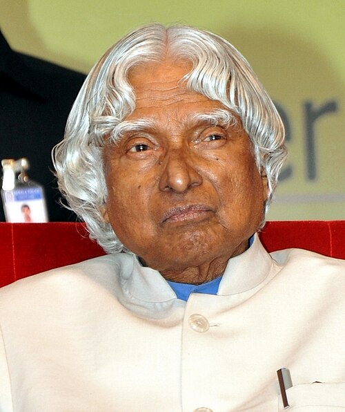

🚀 Space & Defence
Contributed significantly to India's space, missile and defence technology programmes.
A Tribute to the People's President
The Missile Man of India • Scientist • Teacher • Visionary

Dr. A. P. J. Abdul Kalam
Dr. Avul Pakir Jainulabdeen Abdul Kalam was an Indian aerospace scientist and the 11th President of India. He played an important role in India's space and missile development programmes.
Known for his humility, dedication and vision for India's youth, he inspired millions of students to dream big and work towards building a better nation.
Born on 15 October 1931 in Rameswaram, Tamil Nadu.
Completed his studies in physics and later pursued aerospace engineering.
Began his career in India's space and defence research programmes.
Played a major role in India's first indigenous satellite launch vehicle programme.
Received the Bharat Ratna, India's highest civilian honour.
Became the 11th President of India and served until 2007.
Passed away on 27 July 2015 while delivering a lecture to students in Shillong.
Contributed significantly to India's space, missile and defence technology programmes.
Received India's highest civilian honour, the Bharat Ratna, in 1997.
Authored inspiring books including Wings of Fire and Ignited Minds.
Dedicated his later years to teaching, interacting with students and inspiring young minds.
“Dream, dream, dream. Dreams transform into thoughts and thoughts result in action.”
— Dr. A. P. J. Abdul Kalam